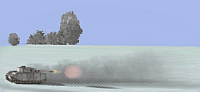

|  |
BELLUM
Campaña dinámica para FB
|
| View previous topic :: View next topic |
| Author |
Message |
JG10r_Dutertre
Joined: 07 Mar 2004
Posts: 945
|
 Posted: Thu Aug 05, 2004 11:18 am Post subject: F.A.Q. Posted: Thu Aug 05, 2004 11:18 am Post subject: F.A.Q. |
   |
|
This FAQ is in develop. The proupose is to offer a place for 2 things:
1) Provide some Question and answers
2) Provide a place to write new questions and answers.
If you find a interesting question and
answers in some forum topic, copy and paste them here, so FAQ will
increase. Later, a compilation will be don, and posted as a HTML normal
page.
Any other post will be deleted. Thanks. |
|
| Back to top |
|
 |
JG10r_Dutertre
Joined: 07 Mar 2004
Posts: 945
|
| Posted: Thu Aug 05, 2004 11:21 am Post subject: |
|
|
In next Q&A there are some numbers about damage and %.
This values can change in future, a little more or a little less.
Q: What is the quantity of troops in each sector with 100% supply from the town?
R:
A suplied field campament: jeeps, AAA, fuel, + 4 tanks.
A NOT-suplied field campament: jeeps, AAA, fuel
Q: What time is necessary to renew the troops after attack, if they are inside supply radius of the town?
R:
No time neccesary. if there is suply, all missions will have a campament with 4 tanks
Q: When supply radius is growing how quick the troops appear in the empty sector?
R:
Automaticaly. If radius "touch" center of sector, troops with tanks will be there.
The center of the sector has to be inside circle to be considered inside suply sector.
Q: How the quantity of troops
is changing in time without support from the town? In figures please.
(for example – in five days they lost 50%, in 10 days disappear)
R:
As said, troops are present or not. There is not intermedia values.
Q: When the supply has been
removed from the sector, will 4 defending tanks be there during 30
missions, or they’ll disappear in the next mission?
R:
No, when suply has been removed, the 4 tanks are no longer there, they go back.
The troops (soldiers, cars and AAA) will stay for one day (30 missions)
and it can happen 2 things after virtual day end: If sector is on army
domain, troops (no tanks) stay more time and sector remain to army
still is attacked. OR if sector is on enemy domain the will go back and
sector change sides inmediatly. What decides the domain is the
geographic position of sector towards cityes distance.
Q: When attacking the field
how the percent of damage calculated? In figures, please too. What is
the maximum damage in % for one attack?
R:
Porcentage of damage is: (Objects destroyed / Objects aviable) * MAX_DAMAGE.
Actualy MAX_damage is 20%
So if you destroy all objects you damage 20%
Amount of aviable objects is reduced when fields are very damaged.
So, when field is very damaged, is very easy to get 20%, just destroy the few objects present.
This is done in this way to make harder to destroy a good shape field, but easy to keep
non-operative an attaked one. Damage level is not linear.
Q: When attacking the town how
the percent of damage calculated? In figures, please. What is the
maximum damage in % for one attack?
R:
In same way as fields. But MAX_DAMAGE for city is set to 30%
Q: Is it more difficult to
capture the town when it suffers more damage, or there is no difference
when damage level is between 51% and 99%? If there is, please, describe
in figures.
R:
To capture a town you have to do a tactical atack to the sector where the city is placed.
This is: Go with your tanks to the sector, and manage to keep alive your tanks. If you do that,
you win control over secor = you win control over town.
The only difference on town damage is this: with 51 ~ 90 % damage, is almost sure the enemy
will have the field champ with 4 tanks defending. So is harder to take control: bombers and 4
champ tanks will attack your tanks. On damages bigger than 90%, is almost sure the sector will
be unsuplyied, only a field champ with some AAA, not a risk for your tanks invading. So you
have only to intercep the bombers.
Q: Is it more difficult to
capture the bigger town than the smaller one, with equal damage level?
If yes, what is exact difference? Once more in figures.
R:
No difference.
Q: When I’m attacking the sector – what is the quantity of the units in attacking group and what are they?
R:
Your attacking group is 9 moving tanks.
The enemy can or canot have 4 static tanks on the champ.
Q: If I have captured the sector, that is not in the supply radius, what quantity of the troops will stay in this sector?
R:
When you win a sector, out of your range, your sector will have a TTL (time to live) of 30 missions = 1 virtualday.
You have to do several attacks, to the point you can capture a city.
The idea is this:
1) Attack enemy city to reduce it suply.
2) attack sectors to aproach city.
3) caprutre city
4) suply city to get less than 50% damage, so you make city safe and you suply your recent captured sectors
Q: With lost of each plane what is damage level the field suffers?
R:
Each plane = 0,25% lost from takeoff landing.
Q: With lost of each pilot what is damage level the field suffers?
R:
Each pilot = 0,50% lost from takeoff landing. (AI pilots and tripulation counts too)
Q: Will the airfield suffer damage when the pilot has made emerg landing somewhere outside airport?
R:
Yes, plane lost, 0.25% damage.
|
|
| Back to top |
|
|
=FPS=cleric
Joined: 05 Aug 2004
Posts: 13
Location: Novosibirsk
|
| Posted: Wed Aug 18, 2004 6:20 am Post subject: |
|
|
Q: Is true that sectors, without color band at down automatically go under checking the nearest city and change the colour?
R:
Yes its true. The color ban shows the TTL (time to live).
Time to live is set to 30 missions (1 virtual day) on all suplyed
sectors or when you just capture a sector outside suply. After that, if
sector is outside suply will start to decrease by one on every
reportted mission. TTL will increase to 30 when suply reach him. If TTL
reach 0, sector will change to the army controling the close city. When
sector change sides, TTL will remain in 0 if do not have suply from new
owner or 30 if it has suply from new owner.
Q: Supply coveradge of the sector - Can you describe - how the sector must be covered by "radius" to be supplied?
R:
For a sector be suplyed, the geometric center of the sector has to be inside suply circle radius. |
|
| Back to top |
|
|
RR_OldMan
Joined: 04 Jul 2004
Posts: 52
|
| Posted: Thu Aug 19, 2004 7:20 am Post subject: |
|
|
Q:
How many sectors (the maximum quantity), incl. town, can be taken in
account as "isolated", in order to capture the town regardless it’s
damage level?
R:
Isolation warks always same: Isolated sector is the one that does not
has a friendly sector on one of its 8 neighboords sectors. When you
capture a sector by isolation you are the new owner or towns and
airfield on that sector, just like a normal capture.
Q: Is it possible to “isolate” two ore three towns at a time, in order to capture them regardless their damage level?
R:
No, because each town is considered inside a single sector. You can
only isolate one sector, and because that ony one town can be captured
by isolation.
Q: Will the town be taken in account as isolated, when one (or more) of his sectors is connected to the border of the map?
R:
Sectors outside map are not friendly or enemy: they do not exist.
So, a sector in a border has only 5 neighbours and a sector in a corner
has only 3 neighbours. Capturing this sectors will render into a
isloated sector and will be captured.
S! |
|
| Back to top |
|
|
StG111_Darth_Rye
Joined: 08 Mar 2004
Posts: 432
|
| Posted: Mon Sep 20, 2004 4:36 am Post subject: |
|
|
Q: In a mission request we select He111 to do a supply, but as there are not humans, we select IA. Why we get Ju52?
R:AI Suply: In case you select
AI Suply, planes will be: JU-52 for LW and Li-2 for VVS, no matter what
you select on planning options.
_________________
Oberleutenat del Stukageschwader111
www.stg111.tk
Bombardeo a domicilio |
|
| Back to top |
|
|
JG10r_Dutertre
Joined: 07 Mar 2004
Posts: 945
|
| Posted: Fri Sep 24, 2004 11:34 pm Post subject: |
|
|
Pilot Rescues: How does it work?
Firts of all, a pilot to be possible to be rescued needs to be captured first.
Once the pilot is captured (that means, that the message "Pilot X is
captured by opposed forces", must appear), you can find the place where
he is, and land carefuly as close as possible to him. Go to a complete
stop (0 Km/h, no need to stop engine) wait 10 seconds, then take off
and RTB. The rescue will be complete once you land in a friendly base.
If you want to rescue another pilot, after reaching the base, take
off again, fly and search for the next pilot, land close to him and
then RTB. Rescued pilots will not lost their alive condition, will not
lost points or medals (when points/ medal implemented).
- What if i get KIA/bailde/shotdown when RTB?
Since you dont get safe to a base, the rescue process is not complete, and rescued pilot will keep the MIA status.
-Can 2 pilots be rescued at a same time (loading 2 pilots on plane)?
No, only 1 pilot at a time, no matter what plane are you flying.
-If 2 pilots are captured very close, wich one of them will be rescued first?
You cant know exactly. The parser process pilots based on command
order (Leader, wingman2, wingman 2, etc..) So, the one is rescued is
the one first processed, and in general, will be the leader, or the one
with more rank. But if pilots are from different wings (for ex: a
bomber and a fighter) is not possible to know wich one of them will be
rescued.
All the rescue process inside parser is some complex, and it is in
this way because we didnt know about taking off planes. From FB AEP
2.01 we have takeoff events, so, i will try to improve the rescue, so:
Bombers can load more than one pilot and then RTB and things like that
Im afraid this improvement will take some time, because we have more
important things in the todo list. But, right now, the rescues are
working nicely. Just, try to not abuse host TIME.
Is importatnt that landing is done AFTER pilot is captured:
Sometimes a pilot dich on enemy territory, it waits for rescue plane to land, and then bails. This will not
work, because you get the captured status once bailed, and after that,
nobody is landing to rescue the captured pilot, because the plane was
already landed... too complex?
| LLv26_Pihi wrote: | | Is it possible to rescue pilot, if he/she has already left game?(if captured after bail out or crash/emlanded enemy territory) |
Yes, if pilot is captured, you can rescue him/she after he/she left game.
| =FPS=cleric wrote: | | When the pilot can exit from the game? |
After landed
After a Pilot killed
After bailed
If you are captured and you leave game, still is possible you get
rescued, if a team mate manage to find the place where you was
captured. Maybe can locate your damaged plane.
If you have more questions, please post here. TNX. |
|
| Back to top |
|
|
JG10r_Dutertre
Joined: 07 Mar 2004
Posts: 945
|
| Posted: Thu Oct 21, 2004 6:48 am Post subject: |
|
|
Q:In
a mission killed some tanks but if you check the report in the "tactic
attack" section, it only mentions some of these kills. In all other
records it says more tanks tanks as it was the truth.
R:
There is a time limit to destroy tanks. The tanks has to
bedestroyed before 40 minutes from mission start to count towards
mission result. If you destroy tanks aftre 40 minutes, You get credits
of kill, but the kill do not counts towards mission result. This is to
avoid human bombers fly away and come back 1 hour later to kill tanks.
By this time (40 minutes) the ground battle is assumed as over.
Q: When im trying to suply a city or attack a enemy place I make request but the generator fails with: a "ERROR: Can't shedule Bombers flight. " But im sure we have one (or more) airfields.
| Quote: |
Error: Can't shedule Bombers flight for XXX side.
This can happen because XXX army has run out of airfield, or the only
aviable airfiels are too close to the target. XXX has to make a
different request, where the place to attack (or suply) is more than
30km away.
|
XXX can be VVS or LW.
R: This can happen if the
remaining operative airfields are to close to the targets. Target
(enemy place or city to suply) needs to be more than 30 km ayaw from a
operative airfield. Generator will do all possible to find airfields
between a rasonable range. If it fails to do that it will look for any
other airfield with at least 30km distance to target. In case you are
getting this error because running out of airfields you have to select
a diferent place to attack or suply. Just select targets more than 30km
from operative airfields. |
|
| Back to top |
|
|
JG10r_Dutertre
Joined: 07 Mar 2004
Posts: 945
|
| Posted: Tue Oct 26, 2004 12:20 pm Post subject: |
|
|
Q:
What about the fact that I got emergency landed status while having
landed normally on our airfield ? Not very important , but you never
know.
R:
FB stats as emergency land on many situations:
When you damage your plane, when you land in the field, when you land
safe but run out of fuel 1 second before stop engine, when you damage
propeler, landing gear or other piece of your plane.
As you can see, it is very hard to know when the plane is really damaged or not.
To deal with this bellum parser detects the last landing place:
Il last landing is is
inside 2km radious from base is counted as "safe landing on base", no
matters if it is a normal land or a emergency one. If you are in base
plane never is count as lost,
no matter how much damage recived (is impossible to know for parser),
you are on base and is soupossed plane can fixed. The only differences
possible here is that in report you can get "landed (emerg)", and that
is true, but plane is not lost and your stats count as landing. You
(optionally) can bail after landing on base, and bail will not be showed on reports. And safe landing on base will make you never get shoot down by enemy.
If your last land is not in base, that will be an emergency land outside base. you have to bail always
(or you get MIA). Plane will be counted as destroyed allways because is
far from base. Pilot can be or not captured depending on wich place you
emergency landed.
There are few exeptions: if you land safe on base and after that
you get killed, you are killed. Can be because accident on taxi, you
get strafed, a friend plane colision with you, etc...
S! |
|
| Back to top |
|
|
|
Watch this topic for replies
 |
You can post new topics in this forum
You can reply to topics in this forum
You can edit your posts in this forum
You can delete your posts in this forum
You can vote in polls in this forum
You can moderate this forum |
Powered by phpBB 2.0.10 © 2001, 2002 phpBB Group
|